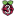

树莓派(Raspberry Pi)资源大全中文版
Github上著名的Awesome - XXX 系列，怎能少了树莓派 :)
awesome-raspberry-pi 是由 thibmaek 发起维护的 树莓派 资源列表，内容包括树莓派的工具、项目、镜像、资源、社区。
近期我正好在折腾树莓派，觉得资源列表上有很多好玩的项目，遂决定译个中文版本，之后会根据我个人的使用情况添加更详细的注脚，也欢迎国内的树莓派爱好者一起来维护这个列表
项目的参与者
- Todo：
- 添加国内开发者有趣的项目
项目的参与者
Todo
目录
系统镜像
- Raspbian - 来自树莓派官方的操作系统，基于Debian，同时提供一个精简版
- NOOBS - 新的开箱即用软件, 为初学者准备的系统安装工具.
- Ubuntu MATE - 为树莓派准备的Ubuntu发行版，基于MATE桌面环境.
- Snappy Ubuntu Core - 为物联网准备的Ubuntu官方最小发行版
- Windows 10 IoT Core - 为物联网准备的Windows 10发行版.
- OSMC - 基于Kodi的开源数字媒体中心系统.
- PiNet - 用于管理树莓派课堂的系统.
- Risc OS - 非Linux操作系统, 来自ARM微处理器的开发小组
- RuneAudio - 免费和开源和操作系统，可将嵌入式硬件变为Hi-fi音乐播放器
- OpenELEC - 开放的嵌入式Linux娱乐中心，基于Kodi构建的轻量级系统.
- HypriotOS - 基于Debian的最小操作系统，为运行docker做了优化.
- Kali Linux - 为渗透测试和正义黑客准备的Linux发行版，运行在ARM设备上
- RetroPie - 在树莓派玩复古游戏。
- Alpine Linux - 面向安全的linux发行版，基于musl libc和busybox.
- Arch Linux ARM - 轻量且灵活的linux发行版，力图保持简单.
- Volumio - 高保真音乐播放器
- Recalbox - 更轻巧的复古游戏和媒体中心
- Lakka - 在树莓派上玩复古游戏，完全基于RetroArch构建.
- RasPlex - 为树莓派准备的Plex客户端.
- chilipie-kiosk - 可直接引导到全屏Chrome的镜像，非常适合用于仪表板和构建监视器。
- DietPi - 为2G SD卡准备的最小镜像， 带有许多可配置项和脚本.
- CentOS - 运行在树莓派上的CentOS.
- Minibian - 最小的 Raspbian (比 Jessie Lite还要轻量).
- BerryBoot - 系统启动加载器(Bootloader) /通用操作系统安装程序 , 支持 VNC 和 HDMI-CEC.
- PirateBox - 匿名的离线移动文件共享/通信系统。
- OctoPi - 为3d打印机准备的发行版.
- Kano OS - 为探索、创造和玩耍准备准备的开源操作系统 – 对树莓派免费.
- resinOS - 在嵌入式设备中跑docker容器的开源操作系统, 考虑了生产环境所需的可靠性
- Fedora
工具
- PiBakery - 基于google的blockly项目, 为树莓派准备的易用的配置工具.
- ApplePi Bakery - macOS应用程序,可轻松地将系统镜像安装/备份/恢复到SD卡上.
- Etcher - 跨平台的SD卡烧录程序，使用简单，易于扩展.
- PiShrink - Bash脚本，它会自动缩小pi镜像，之后在启动时将其调整为SD卡的最大存储空间大小
- OpenVPN-Setup - 用于将树莓派设置为OpenVPN服务器的Shell脚本.
- pi-gen - 用于构建树莓派官方镜像的工具. 你可以将其用于构建自己的定制镜像（预装特定软件）
- PiVPN - 简单、灵活的单行安装脚本，用于在树莓派上安装OpenVPN服务
- Network Presence Detector - 配置Pi0，使其可以在wifi网络里扫描，发现谁是"home"
项目
- Mini OONTZ - 3D打印的迷你MIDI控制器
- Power Sniffing Strip - 藏在电源插座里的树莓派, 用于嗅探网络数据.
- Raspberry Pi Erlang Cluster - 跑在树莓派2代上的Erlang集群
- NTP driven Nixie Clock - 由树莓派驱动的数码管时钟
- 40-node Raspberry Pi Cluster - 40个节点构成的树莓派集群
- Raspberry PI Hadoop Cluster - 跑在树莓派上的大数据集群.
- Multi-Datacenter Cassandra on 32 Raspberry Pi’s - 32个节点的树莓派cassandra数据库集群.
- Building a Ceph Cluster on Raspberry Pi - 基于分布式对象存储系统RADOS的高度冗、低功耗家庭存储解决方案。
- Smart Mirror - 带语音控制智能镜子，集成物联网.
- Magic Mirror - 开源模块化智能镜子平台.
- Door bot - 门卫机器人，感知到门被打开时将给你发送信息.
- Chromebook Charger Kiosk - 给在校生的Chromebooks准备的定时充电站
- Jasper - 灵活的开源个人助理.
- Lightberry - 为树莓派和电视准备的LED照明解决方
- SecPi - 基于Raspberry Pi的家庭报警系统.
- PiClock - 别致的时钟
- Garage Door Opener - 车库开门器
- Movel - 树莓派车载电脑
- PiFanTuner - CPU风扇控制程序. 
- SkyJack - 在无线距离内，劫持并控制任何的Parrot AR Drone.
- Nerves Project - 为嵌入式设备准备的erlang交叉编译环境
- Wordpress using Docker - 使用docker跑wordpress（采用动态DNS）
- Pi-hole - 为互联网广告准备的黑洞.
- Planning lunch with a Slackbot on resin.io - 用nodejs写的Slack机器人-- 帮助解决"我们该吃什么"
- Sonus - 开源、跨平台的语音识别框架（Google Cloud Speech）
资源
文章
- Raspberry Pi and why do I need one? - 本文介绍树莓派以及能用它做些什么
- 10 Ways To Power - 十种给树莓派供电的方法.
教程
- Bridging Wifi to the Raspberry Pi over Ethernet - 在macOS和树莓派之间设置网络
- Raspberry Pi login with SSH keys - ssh免密码登录树莓派（使用SSH key）
- How to setup a secure VPN server on Raspberry Pi or DigitalOcean - 简单、安全而详细的指南：在树莓派上设置VPN
- Controlling Spotify with Slack and a Raspberry Pi - Node.js项目， 使用libspotify控制 Spotify 和 Slack.
- Moonlight - 嵌入式系统的Gamestream客户端（把电脑主机的游戏串流到树莓派，然后输出到电视玩）
- Raspberry Pi Zero: Programming over USB - 树莓派Zero：使用USB来编程，无需网络连接、键盘或者屏幕
- Use a Raspberry Pi with multiple WiFi networks - 将树莓派接入多个无线网络的教程.
- Raspberry Pi Media Server Guides - 用树莓派搭建媒体服务器的教程（HTPC：Home Theater Personal Computer，即家庭影院电脑）
- Turn the Raspberry Pi Zero into a mini dongle computer - 设置pi0，使其可以用USB登录ssh 和 vnc .
- How To Make a Raspberry Pi Turn on a Lamp with iBeacon™ Technology - iBeacon新手教程.
- Build a $35 Time Capsule - 时光机器（备份服务）
- Raspberry Pi Game Console - 用35美元搭建一个树莓派复古游戏机.
社区
- Official Forum
@Raspberry_Pion Twitter#raspberrypion Freenode- StackExchange
- Reddit Projects
- eLinux Hub
贡献
可以在这里找到贡献指南：TODO
协议